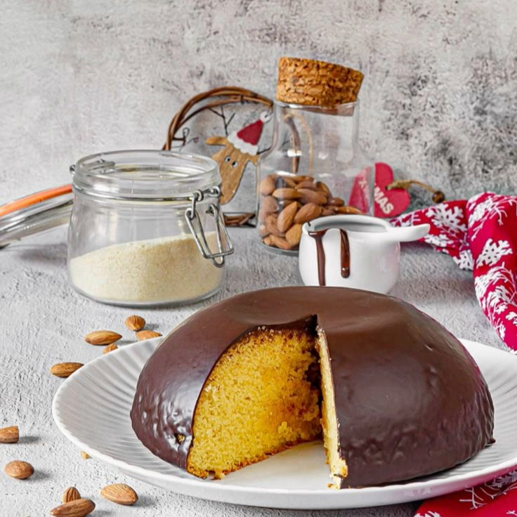
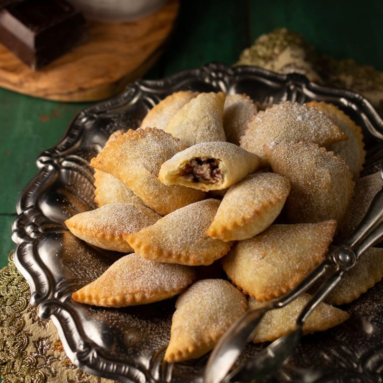

Ricette Dolci
In questa sezione troverai tutte le ricette dolci tipiche delle regioni italiane, adatte ad ogni occasione.

Abruzzo -Il Parrozzo-
Ingredienti:
-Mandorle dolci 60 g
-Mandorle armelline 40 g
-Zucchero 60 g
-Uova (circa 4 medie) 200 g
-Burro 80 g
-Farina 00 60 g
-Fecola di patate 60 g
Per la copertura:
-Cioccolato fondente 200 g
Preparazione:
Per preparare il dolce abruzzese con mandorle e cioccolato iniziate versando le mandorle classiche e armelline in un tegame con abbondante acqua. Portate a ebollizione e lasciate sbollentare le mandorle per 4-5 minuti. Poi scolatele aiutandovi con una schiumarola e riponetele in una ciotolina. Sgusciatele una ad una, scartando anche la pellicina che le riveste (potete anche acquistare mandorle già sgusciate e pelate in alternativa).
Fatele asciugare su un vassoio foderato con carta assorbente. Quando saranno ben asciutte, versatele in un mixer assieme a 30 g di zucchero e tritate finemente, fino ad ottenere una farina di mandorle. Cominciate a sciogliere il burro in un pentolino, poi una volta fuso lasciatelo intiepidire.
Quindi in una ciotola separate i tuorli dagli albumi. Montate gli albumi con le fruste elettriche fino a quando non saranno montati a neve fermissima. Procedete con i tuorli: lavorateli con le fruste elettriche aggiungendo poco a poco lo zucchero.
Continuate a lavorarli fino a che non otterrete un composto spumoso e chiaro a cui aggiungerete le mandorle ridotte in farina; continuate a lavorare per amalgamarle al composto. Setacciate insieme la farina e la fecola in un recipiente a parte.
Unite le farine al composto ottenuto, continuando a lavorare con le fruste elettriche; incorporate anche il burro fuso ormai tiepido. Quando il composto risulterà omogeneo, fermate le fruste e aggiungete gli albumi montati a neve, molto delicatamente.
Fate attenzione ad incorporarli muovendo la spatola dal basso verso l’alto con molta delicatezza per evitare che smontino. A questo punto l’impasto è pronto: imburrate e infarinate uno zuccotto dal diametro di 16,5 cm in cui verserete il composto.
Dopo averlo livellato aiutandovi con una spatola infornate in forno statico preriscaldato a 180° per 65 minuti (sconsigliamo l'utilizzo del forno ventilato). Se doveste accorgervi che la superficie tende a diventare troppo dorata coprite lo zuccotto con un foglio di alluminio. Prima di estrarre dal forno effettuate la prova stecchino per verificarne la cottura. Una volta cotto, estraete dal forno lasciate intiepidire quindi e sformate capovolgendo lo zuccotto su una gratella e lasciate raffreddare il dolce completamente.
Mentre il dolce raggiunge temperatura ambiente dedicatevi alla ricopertura: in una bastardella versate il cioccolato tritato finemente poggiatela su un pentolino con acqua calda che bolle dolcemente (possibilmente senza che l'acqua arrivi al fondo della bastardella) e fatelo sciogliere a bagnomaria, continuando a mescolare. Ponete un vassoio sotto la gratella su cui avete fatto raffreddare lo zuccotto: quando il cioccolato sarà completamente fuso, versatelo sul vostro dolce. Se volete mantenere un copertura di cioccolato lucida più a lungo potete utilizzare la tecnica del temperaggio del cioccolato.
Aiutandovi con una spatola fate aderire il cioccolato su tutta la superficie del dolce e lasciate colare il cioccolato in eccesso. Per ottenere una ricopertura liscia date dei piccoli e leggeri colpetti della gratella sul piano di lavoro in modo tale da far cadere il cioccolato in eccesso. Quando il cioccolato si sarà raffreddato e indurito, potrete servire il vostro dolce abruzzese con mandorle e cioccolato!

Molise - I Colac-
Ingredienti:
-Farina 00 700 g
-Uova 4 Strutto 150 g
-Zucchero 100 g
-Vino bianco secco 50 g
Per il ripieno:
-Pane raffermo (solo la mollica) 50 g
-Mandorle pelate 100 g
-Noci 100 g
-Mele Golden 1
-Fichi secchi 4
-Scorza d'arancia 1
-Chiodi di garofano macinati q.b.
-Cannella in polvere q.b.
-Miele millefiori 120 g
Preparazione:
Per preparare i colac molisani, iniziate dall'impasto: rompete le uova in una ciotolina e unite lo zucchero mescolando con una fochetta o una frusta fino a renderli un composto omogeneo. In un'altra ciotola capiente versate la farina, unite al centro i tuorli sbattuti con lo zucchero e poi versate anche lo strutto.
Versate anche il vino bianco secco e cominciate ad amalgamare gli ingredienti con le mani. Quando avrete un impasto sufficientemente omogeneo, trasferitelo su una spianatoia leggermente infarinata. Continuate a lavorare alcuni minuti per ottenere un panetto.
Avvolgetelo in pellicola. Conservate almeno un'ora in frigo mentre vi dedicate al ripieno: in un mixer versate la mollica di pane raffermo, le noci e le mandorle pelate, i fichi e la mela. Frullate fino ad ottenere un composto uniforme. Poi aromatizzate con cannella e chiodi di garofano in polvere.
Frullate ancora qualche istante, poi versate l'impasto ottenuto in un pentolino. Aggiungete il miele e mescolate tutto cuocendo a fiamma bassa per pochissimi minuti. Trasferite poi il ripieno in una ciotola, mescolate per far intiepidire, poi profumate con scorza d'arancia grattugiata e mescolate ancora. Riprendete l'impasto riposato, stendetelo fino ad ottenere un millimetro circa di spessore.
Coppate con un coppapasta di circa 7 cm di diametro. Ponete al centro di ogni cerchietto un cucchiaino di ripieno, chiudete il raviolo e sigillate il bordo schiacciando con i rebbi di una forchetta. Cuocete in forno statico preriscaldato a 200 gradi per circa 10 minuti. Continuate ad impastare l'avanzo di impasto per creare altri biscotti da cuocere non appena gli altri saranno pronti: otterrete circa 25 biscottini con queste dosi. I vostro colac molisani sono pronti: basterà farli raffreddare completamente e poi cospargerli con zucchero a velo.
Cuocete i vostri primi colac in forno statico preriscaldato a 200° per circa 10 minuti. Continuate a stendere e lavorare l'avanzo d'impasto per creare altri biscotti da cuocere non appena gli altri saranno pronti: otterrete circa 25 biscottini con queste dosi. I vostro colac molisani sono pronti: basterà farli raffreddare completamente e poi cospargerli con zucchero a velo a piacere